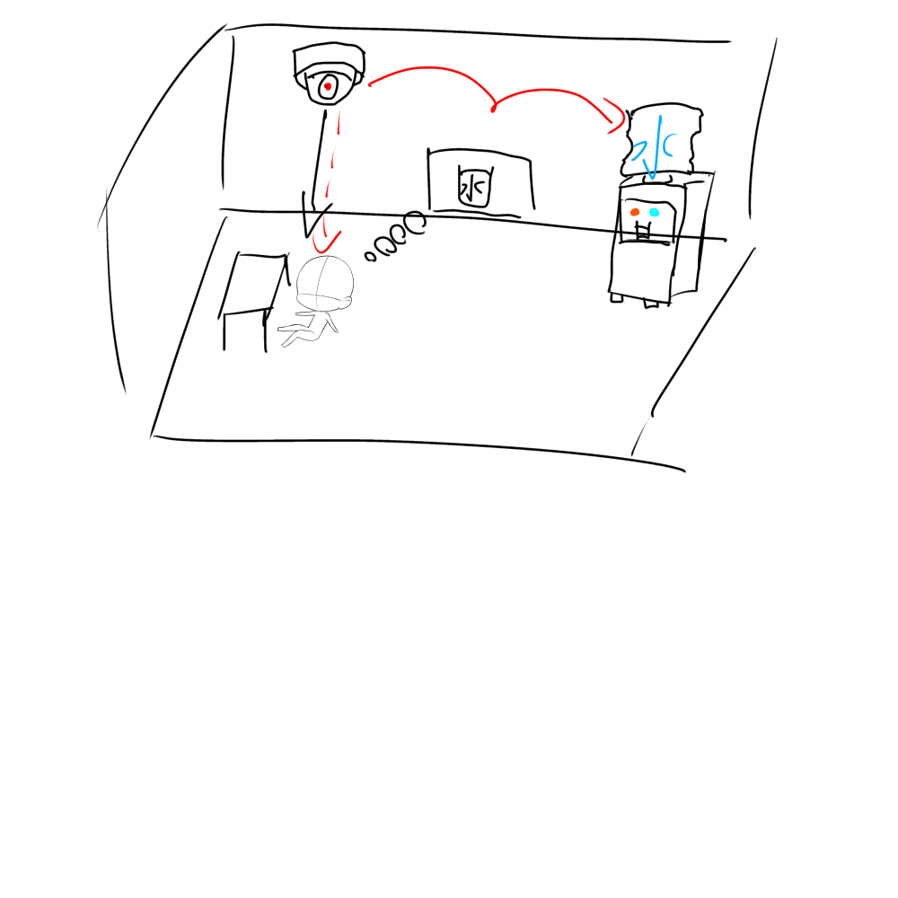

Gooey Menu
Using CSS and SVG Filters
1⃣ポストイット画像

2⃣プログラミング的思考で手順を説明
・車の自動運転
ループ：エンジンをかけたところから始まる
もし：全車との距離をセンサー感知し（音を鳴らす・ブレーキが起動する）
もし：白線をタイヤが踏むとハンドルが自動でアシスト
・ペットの自動餌やり機
ループ：コンセントにつながっている間
もし：設定した時間になると餌がでる
もし：ペットに異変が起きるとセンサーが反応しスマホに通知が来る
3⃣プログラミングでどのようなことができるか？自分なりに

喉渇きセンサーが感知
喉の渇きをAIが感知してウォーターサーバーの水がでる
↓
心理的にAIが脳を読み取る
ryuugoのサイト